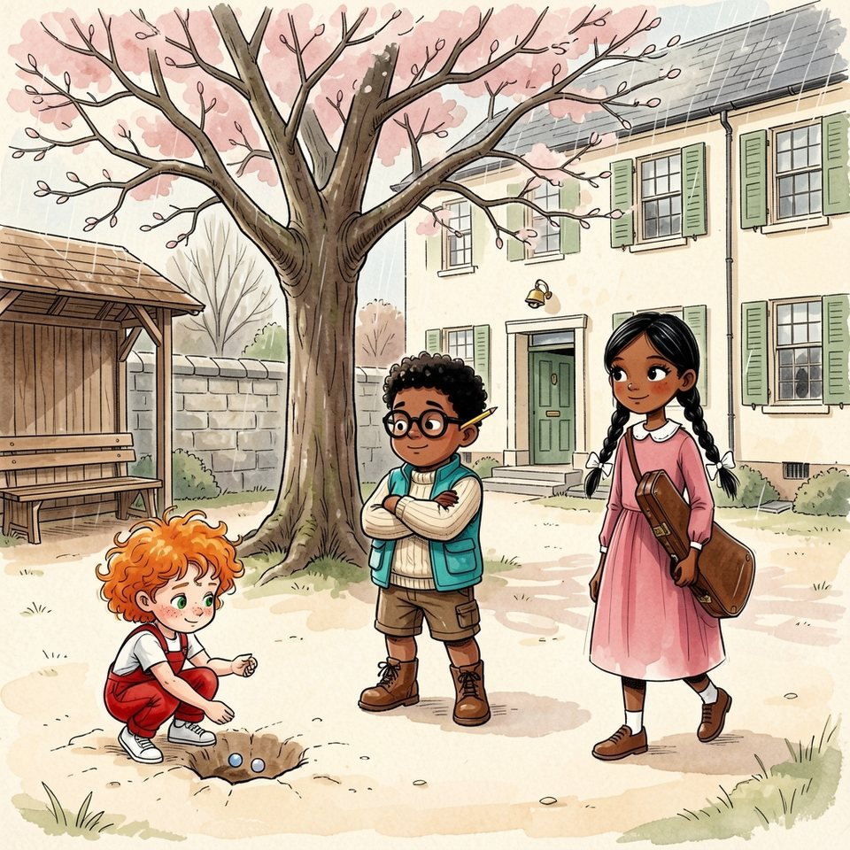

Titistoire › Les Comètes (6-8 ans)
Quatre-vingt-dix-neuf marches
Une année à Virevent, l'histoire du mois de mars : Jeanne, Gaspard, Suzie et Marin.

▶ Écouter et regarder l'histoire
Gratuit, sans inscription : la voix lit, le texte suit mot à mot, les images tournent comme dans un album.
Le texte de l'histoire
Mars était arrivé à Virevent avec ses giboulées. Dans la cour, le vieux cerisier n'avait encore que des bourgeons, serrés comme des poings, et l'on jouait aux billes entre deux averses.
Jeanne avait creusé un trou du talon et secouait trois billes dans ses mains. « Une partie, Gaspard ! Pour de faux. À la fin, chacun reprend les siennes. »
« Pour de faux, ça ne compte pas. Premièrement, on ne gagne rien. Deuxièmement… » « Deuxièmement, on s'amuse ! » Gaspard remonta ses lunettes. « Seul compte ce qu'on gagne. »
Or il avait une chose à gagner, et ce n'était pas une bille. Le lendemain, c'était le Grand Calcul. Le meilleur monterait au beffroi, samedi, sonner midi pour toute la ville.
Garance traversa la cour, très droite, sa serviette à musique sous le bras. « Ce n'est pas pour être méchante, mais deuxième, c'est très bien aussi. » « Jouer aussi ! Essaie ! » riposta Jeanne. Gaspard serra son carnet. Cette fois, il serait premier.
Ce jeudi-là, à quatre heures moins dix, Monsieur Grison posa sa craie. « Demain, le Grand Calcul. Le vainqueur montera samedi au beffroi, derrière Monsieur Colimaçon. Qu'il déjeune bien : l'escalier est long. »
Gaspard ouvrit son carnet. Cinq Grands Calculs. Garance, première, cinq fois. Gaspard, deuxième, cinq fois : d'un point, d'un demi-point, et une fois d'une virgule oubliée, qu'il n'avait jamais digérée.
Au pupitre voisin, Garance alignait ses plumes par ordre de taille. « Chez nous, on est premiers », répétait-elle souvent, du ton dont on récite la table de sept.
La cloche sonna, la classe se vida comme un seau. Monsieur Grison sortit de son grand pas de héron, et sa poche de gilet fit cling-cling jusqu'au bout du couloir.
Gaspard, qui rangeait toujours tout dans le même ordre, resta seul. Au pied du bureau, il y avait un papier plié en quatre. Il le ramassa. Juste pour le rendre. Mais le cling-cling était déjà loin.
« Je le rendrai demain », annonça-t-il au poêle, qui ne fit aucune objection. Il glissa le papier dans son carnet. Seulement, à travers la feuille pliée, on devinait de l'encre. Des chiffres, en colonnes.
Il s'arrêta sur la passerelle de l'écluse. Juste pour voir. Une liste de commissions, cela pouvait attendre. Ce n'était pas une liste de commissions. C'étaient vingt opérations, de la belle écriture penchée du maître.
Il replia la feuille si vite qu'il faillit la lâcher dans l'eau. Trop tard. « Alors, mon grand, qu'as-tu compté, aujourd'hui ? » Sa mère tournait la manivelle, et son rire passait par-dessus la rivière.
Chaque soir, il avait une réponse. « Rien », marmonna-t-il. C'était la première fois. Elle haussa un sourcil ; mais une péniche cornait en aval, et elle retourna à ses portes.
Cette nuit-là, les opérations se résolurent toutes seules dans sa tête, comme le lait monte dans la casserole. « Je n'ai rien copié, souffla-t-il au plafond. Je sais d'avance, voilà tout. » Le plafond ne parut pas convaincu.
Le vendredi matin, Gaspard avait résolu de tout avouer. Il leva même la main, à moitié. Puis le maître distribua les feuilles, lança : « Commencez », et la main redescendit.
Sa plume courait toute seule. Il ne calculait pas : il reconnaissait. La troisième, la huitième, la quatorzième et sa retenue sournoise. Il les saluait au passage, comme de vieilles connaissances.
Au coin du pupitre, un bout de papier plié dépassait du carnet, large comme un ongle. Garance tourna la tête. Elle regarda le bout de papier. Puis elle regarda Gaspard.
Il sentit ses oreilles chauffer. Mais Garance ne leva pas le doigt. Elle se tourna vers la fenêtre et contempla longuement les bourgeons du cerisier, elle qui ne perdait jamais une seconde.
« Elle sèche sur la quatorzième », pensa Gaspard. Il rendit sa copie le premier. Jamais il n'avait eu si peu de plaisir à avoir tout juste.
À quatre heures, Monsieur Grison rendit les copies, les moins bonnes d'abord, pour faire durer. Il n'en resta que deux. « Garance : dix-neuf. Une retenue oubliée à la quatorzième. »
« Gaspard : vingt sur vingt. Pas une rature. Samedi, huit heures et demie, au pied du beffroi. » On applaudit. Jeanne applaudit comme trente, debout sur son banc.
Gaspard attendit la joie. Il l'avait tant imaginée, cette minute, qu'il en connaissait le goût : un goût de berlingot. Elle n'avait le goût de rien. Dans sa poche, le carnet pesait comme une brique.
Et Garance ? Ni yeux rouges, ni menton qui tremble. Elle sortit en balançant sa serviette à musique à bout de bras, comme un panier, et sautilla par-dessus une flaque.
Gaspard ouvrit son carnet pour écrire « premier ». Le papier plié lui glissa sous les doigts. Il referma le carnet sans rien écrire. Il rendrait la feuille lundi. Ou jamais.
Le samedi, Monsieur Colimaçon l'attendait devant la petite porte du beffroi. Il était si vieux et si plié que sa barbe blanche frôlait ses genoux. Il mit un long moment à trouver la serrure.
« Bonjour, monsieur. C'est moi, le vainqueur. » Le mot lui resta en travers. Le vieil horloger hocha son chapeau melon, lentement. « Ah. Bien. Montons. Nous ne sommes pas en avance. »
L'escalier s'enroulait dans la tour comme l'intérieur d'un coquillage. Monsieur Colimaçon posa sa canne sur la première marche. Puis un pied. Puis l'autre. Puis il s'arrêta, et regarda le mur avec intérêt.
Une marche. Une pause. Une marche. Une pause. À la septième, Gaspard avait fait le calcul : à ce train-là, ils seraient en haut pour midi. Une matinée entière derrière un dos de velours bordeaux.
« On ne pourrait pas aller plus vite ? » « Toi, tu pourrais. Moi, je vais à ma vitesse. C'est la seule que j'aie. » Et la canne se posa sur la huitième.
À la trentième marche, une fenêtre étroite donnait sur la place. Le manège dormait sous sa bâche d'hiver. Le triporteur du boulanger passait, pas plus gros qu'un jouet. Tout Virevent attendait son midi.
À la quarante et unième, on voyait la cour et le cerisier. Pourquoi Garance avait-elle sautillé ? Gaspard retournait la question dans tous les sens. Elle ne tombait jamais juste.
Dans cet escalier, il n'y avait personne à qui parler que sa propre tête. « Vingt sur vingt, lui serinait-elle. Bravo. Tu les as bien reconnues. »
À la soixantième, sa victoire pesait plus lourd qu'un cartable de rentrée. À la soixante-dixième, il aurait volontiers échangé son vingt contre un honnête quatorze.
« Vous faites ça tous les jours ? » « Depuis cinquante-deux ans. » « Et vous ne vous ennuyez pas ? » Le vieil homme considéra la question pendant une marche entière. « Je n'ai pas le temps. »
« Quatre-vingt-dix-neuf », annonça Gaspard. Le vent entrait par les arcades. La comète dorée de la girouette grinçait au-dessus d'eux, et la grosse cloche attendait, sa corde pendue jusqu'au plancher.
Monsieur Colimaçon remonta l'horloge. Cela prit un certain nombre de tours de clé, que Gaspard, pour une fois, oublia de compter. Tout en bas, l'écluse n'était pas plus grande qu'une boîte d'allumettes.
« Monsieur, pourquoi elle retarde, votre horloge ? Cinq minutes. Tous les jours. » L'horloger rangea sa clé. Il avait l'air de quelqu'un à qui l'on pose enfin une bonne question.
« On a proposé de me porter. Deux gaillards, une chaise. Je serais arrivé à l'heure. » Il reprit son souffle. « Midi aurait sonné à midi. Mais ce ne serait plus moi qui serais monté. »
Il désigna la corde du menton. « À toi. C'est ton heure. » Gaspard empoigna le chanvre à deux mains. En bas, des gens levaient déjà le nez.
Gaspard ne tira pas. Il regardait le vieux monsieur s'éponger le front avec un mouchoir à carreaux. Quatre-vingt-dix-neuf marches. Il les avait gravies une à une, sans en sauter aucune.
Gaspard, lui, avait dans sa poche un carnet, et dans ce carnet une feuille pliée en quatre. Ses mains glissèrent le long de la corde. Elles ne voulaient pas. Lui non plus.
« Je ne peux pas, monsieur. » « Elle est lourde, c'est vrai. » « Ce n'est pas la cloche. » L'horloger ne demanda pas ce que c'était. « Alors midi attendra. Il a l'habitude. »
Gaspard dégringola l'escalier quatre à quatre, la main au mur, sans compter une seule marche. Ce qui avait pris une matinée prit le temps d'un éternuement.
Il déboucha sur la place. Toute la classe guettait la cloche, le nez en l'air. Monsieur Grison se tenait près de la fontaine. Gaspard marcha droit sur lui.
« Monsieur. C'est tombé de votre poche, jeudi. » Il tendit le papier à bout de bras. « Je l'ai ramassé pour le rendre. Et puis je l'ai regardé. Juste pour voir. »
Le maître déplia la feuille. Il tâta sa poche, qui fit cling-cling, et ses grandes oreilles rosirent. « Tu as recopié ? » « Non. Je les savais toutes, depuis jeudi soir. C'est pareil. »
« Vingt opérations justes, moins vingt opérations sues d'avance, ça fait zéro, monsieur. J'ai compté. » On n'entendait plus que la fontaine. Même Jeanne ne trouvait rien à ajouter.
« Zéro », confirma Monsieur Grison. Il ne gronda pas. Il ne consola pas non plus. Il rangea la feuille dans sa poche, et boutonna la poche, ce que personne ne lui avait jamais vu faire.
Là-haut, la cloche se décida. Midi sonna à midi dix, et nul ne s'en étonna. « La première place revient à Garance », annonça le maître. Gaspard se tourna vers elle. Garance ne souriait pas du tout.
Elle l'attendit sous les platanes, quand la place fut vide. Ses nattes en tremblaient. « Tu ne pouvais pas te taire ? Garder ta feuille, ton vingt et ton beffroi ? »
« Mais je te rends ta place ! » « Justement. » Elle précisa, comme elle précisait tout : « Je l'avais vue, ta feuille. Elle dépassait de ton carnet d'un demi-centimètre. »
« Et tu n'as rien dit ? » « Rien. » Sa voix baissa d'un cran. « Deuxième. Sans que ce soit ma faute. Tu sais combien de fois ça m'était arrivé ? Jamais. »
« Hier soir, à table, j'ai annoncé : deuxième. Mon père a posé sa fourchette. J'ai ajouté : il a eu vingt. Personne n'a rien pu dire. J'ai dormi comme en vacances. »
Elle cala sa serviette à musique sous son bras. « Chez nous, on est premiers. Samedi, je monterai tes quatre-vingt-dix-neuf marches. Et au prochain trimestre aussi. Merci bien. »
Elle s'éloigna, très droite. Gaspard resta planté là. Il chercha dans quelle colonne de son carnet ranger une chose pareille. Il n'y avait pas de colonne.
Le soir tomba sur Virevent. Madame Bogue allumait ses réverbères. Assis au bord de la fontaine, Gaspard ouvrit son carnet à la page des Grands Calculs.
Il y inscrivit son zéro. Il le fit bien rond, bien fermé, sans trembler. C'était, de tout le carnet, le chiffre le mieux tracé. Ce zéro-là, au moins, était à lui.
Des pas sonnèrent sur les pavés. Garance revenait de sa leçon de piano. Elle fit semblant de ne pas le voir. Gaspard tira de sa poche quatre billes. « Une partie ? Pour de faux. »
Elle s'arrêta. « Et qu'est-ce qu'on gagne ? » « Rien. » « Alors à quoi ça sert ? » « À rien. » Du talon, il creusa un trou dans la terre, au pied du platane.
Garance regarda le trou, puis les billes. Elle n'avait jamais rien fait pour rien. Très lentement, elle posa sa serviette à musique sur la fontaine. « Et comment on commence ? »
Gaspard lui mit deux billes dans la main. Au beffroi, huit heures sonnèrent à huit heures cinq. Ni l'un ni l'autre ne compta les coups.